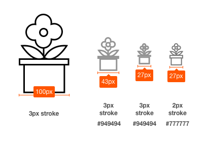
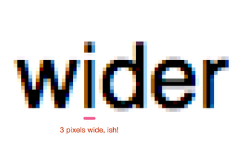

This section contains the main explanatory content of the Understanding. It explains why the Guideline or Success Criterion exists and, at a high level, how to meet it.
The intent of this success criterion is to apply the contrast requirements to important graphical elements in a similar way that it is applied to text in 1.4.3 Contrast (Minimum).
If a graphic is needed to understand the content or functionality of the webpage then it should be perceivable for people with low vision or other impairments.
The term "graphical object" is intended to apply to stand-alone icons such as a print icon (with no text), and the important parts of a more complex diagram such as each line in a graph. Not every graphical object needs to have sufficient contrast with its surroundings, only those that are required to understand what the graphic is conveying.
Graphics that are very thin are harder to perceive, therefore have a higher contrast requirement of 4.5:1. Graphics that are thicker or are solid shapes have a lower requirement of 3:1.
The term essential information is used as many graphics do not need to meet the contrast requirements. If a person needs to perceive a graphic, or part of a graphic (a graphical object) in order to understand the content it should have sufficient contrast. That is not a requirement for:
A graphic with text embedded or overlayed that conveys the same information, such as labels and values on charts.
The graphic is for aesthetic purposes that does not require the user to see or understand it to understand the content or use the functionality.
The information is available in another form elsewhere on the page, or linked from the page.
The graphic is part of a logo or brand name.
For designers developing icons that need to be perceived clearly, see the following example:

Example of several sizes of icon having sufficient contrast at different sizes.
The thicker lines (3px or more) have 3:1 contrast (#949494 on #FFFFFF), the small lines (2px or less) need a darker grey (#777777 on #FFFFFF).
Notes on how the contrast and thickness were derived
The size of 3px for 'thicker' was selected as it aligns with the large-text requirement of 1.4.3 Contrast (Minimum).

24px (large) text, and a zoomed in view of a 24px word to show the pixels that make it up. The "i" character is 3 pixels wide.
Benefits
This explains how following the success criterion benefits particular types of users with disabilities.
The intent of this Success Criterion is to provide enough contrast for graphics that convey important information so they can be perceived by people with moderately low vision.
People with low vision often have difficulty perceiving graphics that have insufficient contrast. This can be exacerbated if the person has a color vision deficiency that lowers the contrast even further. Providing a relative luminance (lightness) difference of 4.5:1 or greater can make these items more distinguishable when the person does not see a full range of colors and does not use assistive technology.
Examples
Examples in Understanding pages are normally simple lists of hand-waving examples. Sometimes, examples are instead provided in sub-sections with headings. In either case, examples should stay high-level and not get into code specifics, which is for techniques.
Status icons on an application's dashboard (without associated text) have a 4.5:1 minimum contrast ratio.
A pharmacy web site uses a warning image to indicate allergic reactions between medications. The image has a 4.5:1 minimum contrast ratio between the image's colors and its background.
Pie Charts
Pie charts make a good case study for this success criteria, the following pie charts are intended to convey the proportion of market share each browser has. NB: The actual figures are made up, these are not actual market shares.
Fail: The following pie chart has labels for each slice (so passes 1.4.1 Use of Color), but in order to understand the proportions of the slices you must discern the edges of the slices (the graphical objects conveying essential information), and the contrast between the slices is not over 3:1.
Not applicable: The following pie chart has visible labels and values that convey equivalent information to the graphical objects (the pie slices):
Pass: The following pie chart has visible labels, and sufficient contrast around and between the slices of the pie chart (the graphical objects):
Note that on the last example, the spaces between the small slices is less than 3px wide, therefore those slices need a 4.5:1 contrast ratio against the white background.
This section references techniques that can be used to meet the Guideline or Success Criterion. There are sub-sections for sufficient techniques, advisory techniques, and failures.
Within each sub-section, there may be "situations" to describe when a set of techniques need to be considered. Remove the sub-section and heading if situations are not used.
Techniques are provided in an unordered list. Reference techniques by linking to the filename of the technique and using the technique ID as link text. Use unlinked plain text if the technique has not been written yet.
If more than one technique must be used for full sufficiency, list them in the same bullet separated by "AND".
If a general technique requires technology-specific techniques to be implemented, end the bullet with "using" and provide a sub-list of those techniques.
Square brackets indicate optional components.
Remove any parts of the template that are not used, such as the section and heading for situations, sub-lists of techniques, or the "AND" construction. Also remove the square brackets around placeholder optional components.
Sufficient
Techniques that are sufficient to meet the Guideline or Success Criterion.
Techniques that are not sufficient by themselves to meet the Guideline or Success Criterion.
Same template as sufficient techniques.
Failure
Techniques that document conditions that would cause the page not to meet the Guideline or Success Criterion, even if sufficient techniques are also used.